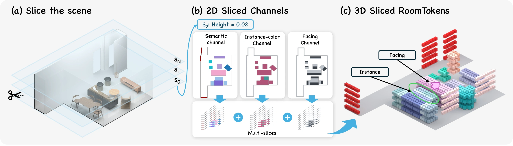
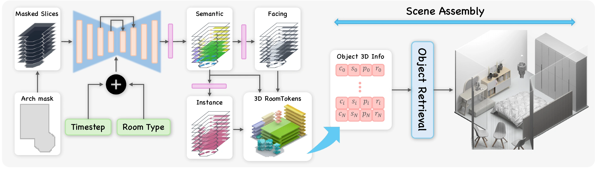
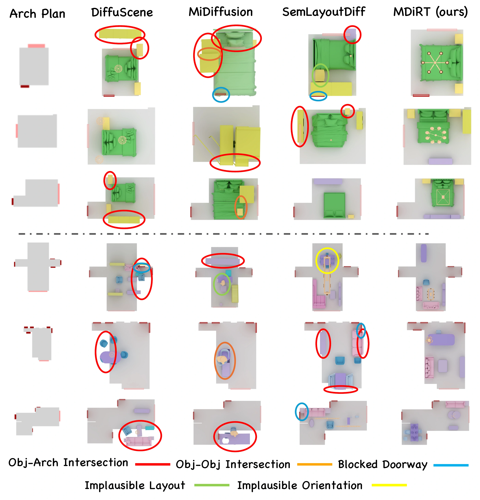

Data Representation

Method Overview

Selected MDiRT Results
Each turntable shows the same generated scene in two representations. Drag the divider to compare the semantic room on the left with retrieved, textured furniture on the right. Use the buttons below each scene to replace the semantic view with RoomToken slices.
Method Comparison

Acknowledgements
This work was funded in part by a CIFAR AI Chair and NSERC Discovery Grants, and enabled by support from the Digital Research Alliance of Canada and a CFI/BCKDF JELF.
We thank Jiayi Liu and Yiming Zhang for constructive feedback and discussion.